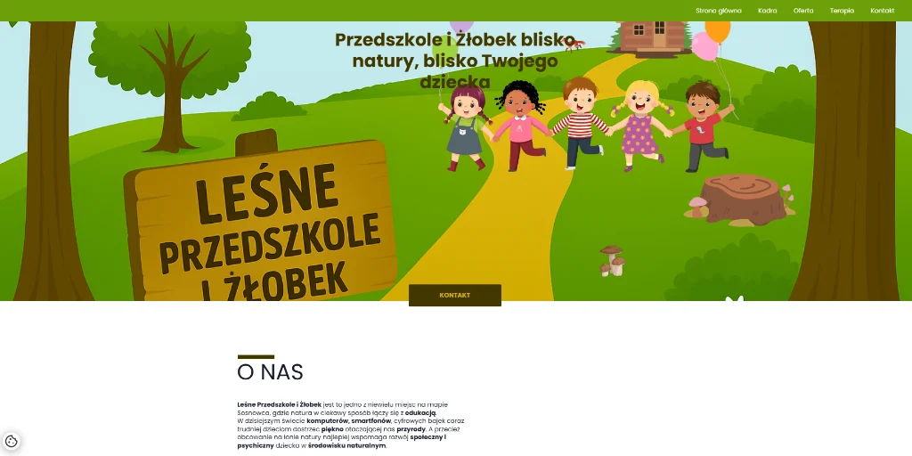

321.32.212312 - 123.3123.31323123
Wiek: 230000 lat
Data pogrzebu: 23.323.123124
dw - dwdwd
Wiek: ddw lat
Data pogrzebu: dwd
fe - ffefe
Wiek: f lat
Data pogrzebu: efef
dwd - dwd
Wiek: dw lat
Data pogrzebu: dwd
21.37.2024 - 13.57.3000
Wiek: 67 lat
Data pogrzebu: gr
21.37.2024 - 13.57.3000
Wiek: 23 lat
Data pogrzebu: 45.67.2306

gr - ggrg
Wiek: rg lat
Data pogrzebu: gr
bibibibi - bibibibi
Wiek: bibibibi lat
Data pogrzebu: bibibibi pi
20.02.1981 - 20.03.2026
Wiek: 45 lat
Data pogrzebu: 23.03.2026
21.37.2024 - 13.57.3000
Wiek: 67 lat
Data pogrzebu: 45.67.2306
27.09.1947 - 10.03.2026
Wiek: 78 lat
Data pogrzebu: 14.03.2026
25.04.1938 - 07.03.2026
Wiek: 88 lat
Data pogrzebu: 14.03.2026
20.02.1980 - 15.03.2026
Wiek: 46 lat
Data pogrzebu: 19.03.2026